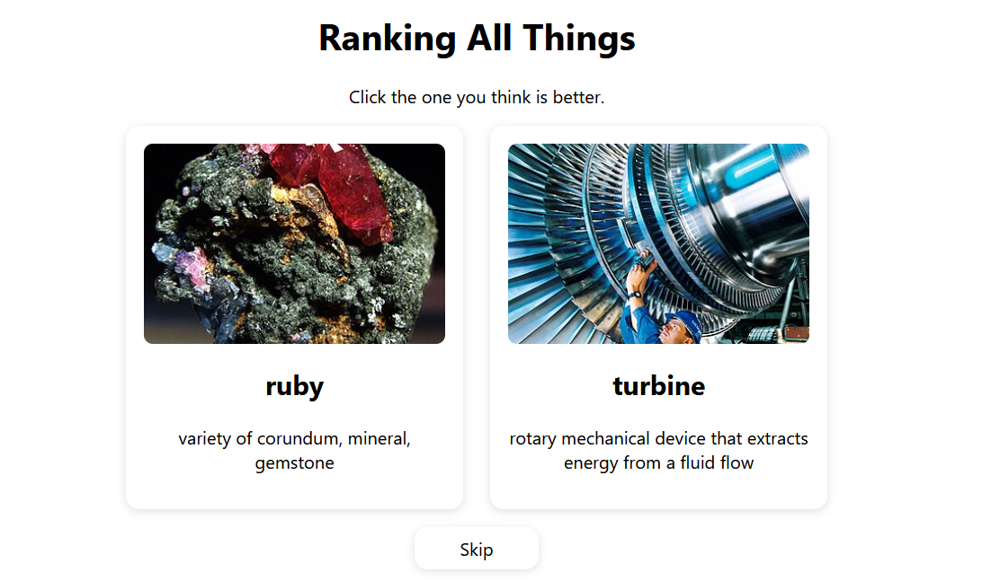

Ranking Website
A project to learn about databases

Overview
A small little side project I made to learn about databases. I recently watched this Tom Scott video about "ranking all things"and thought it would be a kind of interesting thing to try and make myself. It was pretty fun, especially getting people to play it.
How it works
Firstly, I've gotta get all the things. I decided to copy Tom Scott and scrape Wikipedia to find well known things. I used to query Wikipedia, as it ended up being much faster then their own query system. Like Tom Scott, I used the amount of languages an article was translated in as a measure of how well known it is. This is not Something the Wikidata query API can really do, so qlever really helped here. After tweaking a LOT of filters in my query for problematic things to rank, I ended up with a semi-reasonable ~3000 things. From here, I manually filtered this list down to the 2437 things you see on the website now.
Next, the actual ranking and server. As this was my first time doing something like this, I wanted to keep it simple. I used Python FastAPI and SQLite. In the database, I store all of the votes that have been made and every object's data, like its description and title from Wikipedia. I have an endpoint to serve a pair that is rendered by the JS frontend, and another endpoint to vote. I use my own implementation of Glicko to do the ordering based on these votes that come in (very similar to ELO). Whenever someone votes, I hand out a token to make sure that their vote came from a legit pair of objects I served. I also use Cloudflare and rate limiting to prevent bots, but nothing really that intense.
Results
I think it works pretty well, at least for my friend group. We had a lot of fun ranking things on here. If I ever expanded this, I would have to do some more serious bot prevention and likely optimize my database quite a bit. Right now I would estimate this could handle ~50 concurrent users. Not too bad for a first time, but could for sure be better.
I learned a lot about backend and frontend dev with this project. Both aspects were more interesting than I thought they would be, but robotics, embedded systems, graphics, and simulation still make me quite a bit more stimulated. Was fun to try out though!